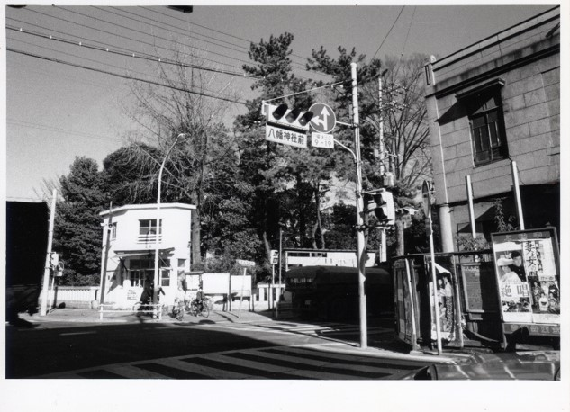
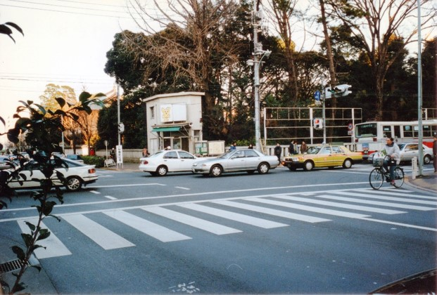
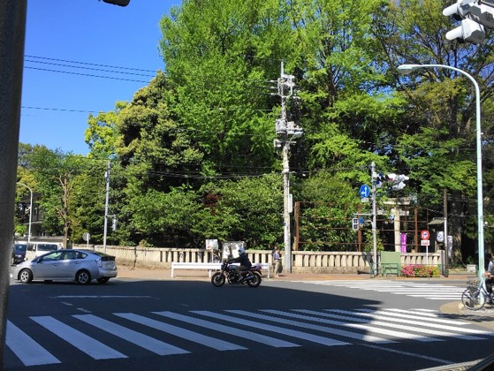

八幡神社前交差点



左と中央の写真は石川さんが公園通りと五日市街道の交わる八幡神社前交差点を撮影したもの、右の１枚は同じ場所の現在の姿である。左の写真は1976（昭和51）年、中央の写真は1987年以降に撮影されたと推定される。
撮影時期を特定するにあたって大きな手掛かりとなったのが、写り込んでいる映画ポスターと警察庁のマスコットキャラクター「ピーポくん」である。左の写真の右端には、「上映中」と書かれた掲示板に貼られた『絶唱』、『妻と女の間』という2枚の映画ポスターが確認できる。これらの映画の公開時期がそれぞれ1975年12月28日と1976年1月17日であること、また、『妻と女の間』のポスター下には「17日→10日」という文字が見られることから、1976年１月17日以降2月10日までの間に撮影された写真だと推定することができる。ポスターの背後に見える建物があった場所は、現在駐車場となっている。
中央の写真の交番の上には、ピーポくんの描かれた看板が見える。ピーポくんは1987年に一般公開された警察庁のマスコットキャラクターであることから、1987年以降に撮影された写真だということが分かる。右の写真から分かるように、現在この場所に交番はない。